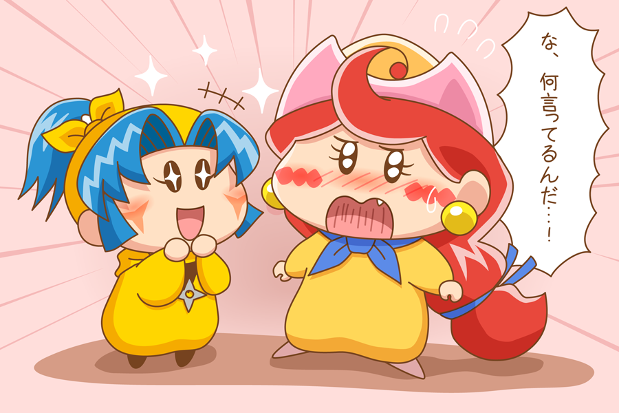

似たもの同士
「どう？沙織さん。私の香お兄ちゃまのコンサートホールは？」
「ありがとう。とても素敵よ」
「そうでしょう！」
「なんでお前がエラそうなんだよ…でもよかったな沙織！」
「音楽関係で有名な方もいっぱいいるし嬉しいわね」
日本でのコンサートに呼ばれ、沙織とアクミは日本へと帰国していた。
「沙織様。取材の方が来られましたよ」
「はい。…じゃあアクミ行ってくるわね」
「この後は南楓たちと会うんだろ？」
「ええ。リルムちゃん張り切ってお菓子作るって」
「そ、そう…か」
沙織は苦笑いしながら部屋を出ていった。
「私もお稽古に行かなきゃ」
「行ってらっしゃいませ桃殿！」
***
部屋にはアクミとヤマネが残された。
「久々でございますね。アクミ殿！」
「そ、そうだな」
アクミはヤマネを横目で見た。
以前ミルモたちと対立していた時、仲間だったラット。
目的は妹を助けるためだったが、ヤマネがその妹だったことを思い出す。
「お前ってラット…じゃなくてネズミの妹なんだよな」
「ええ。…兄様が何か迷惑を？」
「そうじゃないけど似てないなって」
「それについては、よく言われますね…」
本当に兄妹なのかあの二人。
「あの、アクミ殿。一つお聞きしていいですか？」
「いいけど」
「アクミ殿はネズミ兄様をどう思ってらっしゃいますか？」
「な、何言ってるんだ…！」
思わず声が裏返ってしまう。

ヤマネは期待を込めた目でアクミを見つめている。
「そ、そんなの…仲間としか思ってないよ！」
それは自分にも言い聞かせていた。
ネズミとはアクミが沙織とパートナーになって以来会っていない。
顔を赤くするアクミをヤマネはクスッと笑った。
「なんだよ…！」
「すいません、ネズミ兄様も同じような事を言ってまして…」
「あいつが？」
「ええ。…あ、今日の夜ネズミ兄様が人間界に来られます！」
「え」
「アクミさんも来るって言ったら少し嬉しそうな表情をしていました。
久しぶりにお二人で出かけてみてはどうでしょう？」
「ま、まて！アタイは…別に…！！」
久々にネズミと会えるのは嬉しかった。
しかし、こんな事を言われてはどんな顔で会えばいいかわからない。
「アクミ、取材終わったわよ。…どうかした？」
「なんでもないっ！」
ヤマネは悪戯っぽく笑っている。
この兄妹やっぱり似ているとアクミは思った。
-END-
(2015/6/25)